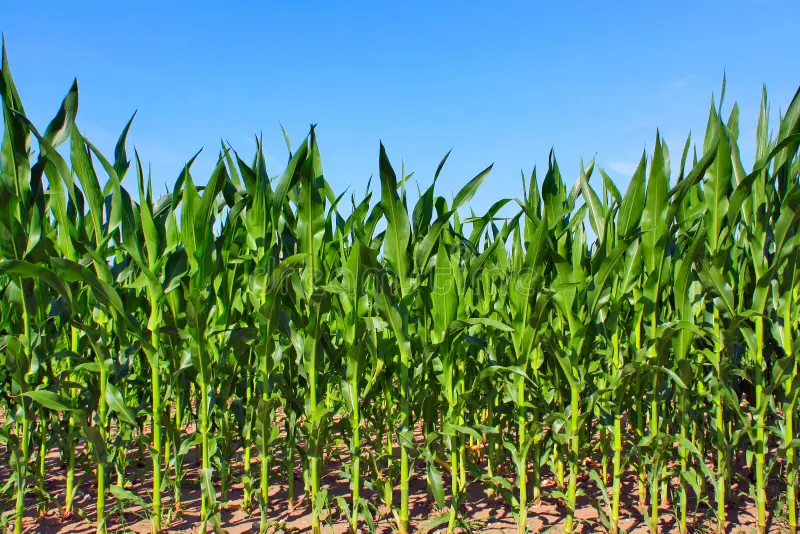

Maize: The Versatile Crop

Uses of Maize
Maize is a versatile crop with a wide range of uses:
- Food: Maize is used for cornmeal, tortillas, and as a staple food in many cultures.
- Animal Feed: It is commonly used as livestock feed due to its high energy content.
- Industrial Applications: Maize is used in producing biofuels, corn syrup, and biodegradable plastics.
Types of Maize
Different types of maize are cultivated for specific purposes:
- Dent Corn: Used primarily in animal feed and industrial products.
- Flint Corn: Known for its hard kernels, often used in food products and as decorative corn.
- Sweet Corn: Commonly eaten as a vegetable due to its high sugar content.
Growth Requirements for Maize
Maize requires specific conditions to grow optimally:
- Climate: Prefers warm temperatures and a frost-free period.
- Soil: Grows best in well-drained, fertile soils with a neutral to slightly acidic pH.
- Water: Requires consistent watering, especially during the growing season.
Natural Fertilizers for Maize
Natural fertilizers support healthy maize growth:
- Compost: Adds essential nutrients to the soil, enhancing fertility and moisture retention.
- Manure: Enriches the soil with nitrogen and other nutrients needed for maize growth.
- Cover Crops: Adds organic matter to the soil and improves soil structure.
Pest and Disease Prevention
Strategies to protect maize crops from pests and diseases:
- Crop Rotation: Helps prevent the buildup of soil-borne pests and diseases.
- Use of Resistant Varieties: Planting pest-resistant maize varieties reduces crop damage.
- Integrated Pest Management (IPM): Combines biological, cultural, and chemical controls for pest management.
Benefits of Maize
- High Yield: Maize is known for its high productivity and is a reliable crop for many farmers.
- Nutritional Value: Maize is a good source of carbohydrates, fiber, and essential vitamins.
- Renewable Resource: Maize can be replanted each season, contributing to sustainable agriculture.
Frequently Asked Questions
1. How long does it take to grow maize?
Maize usually takes around 60 to 100 days to mature, depending on the variety and climate.
2. What are common pests that affect maize crops?
Common pests include corn borers, aphids, and cutworms, which can be managed with integrated pest management practices.
Back to Crop List